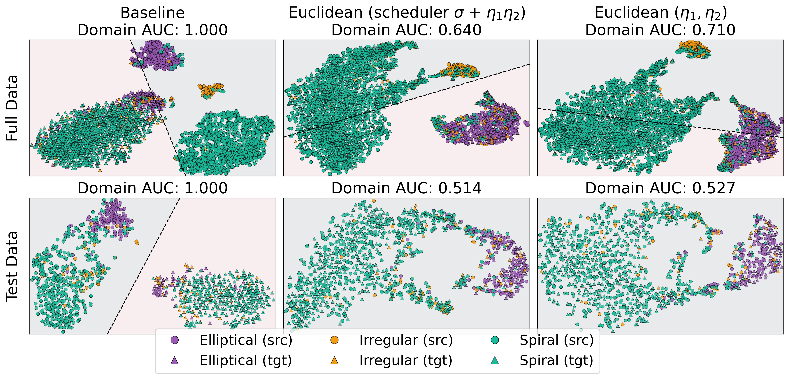
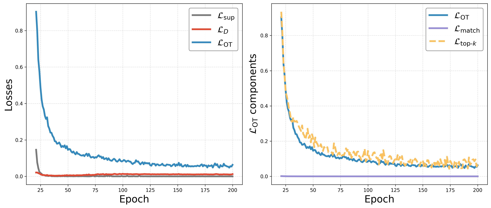
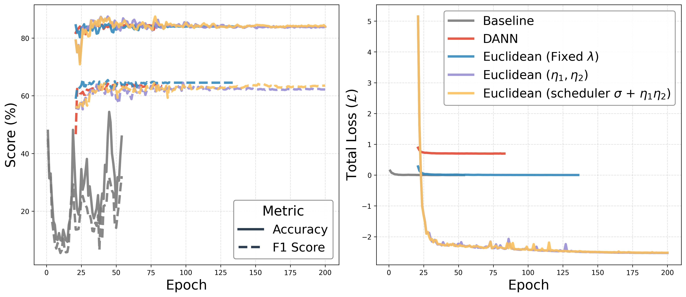
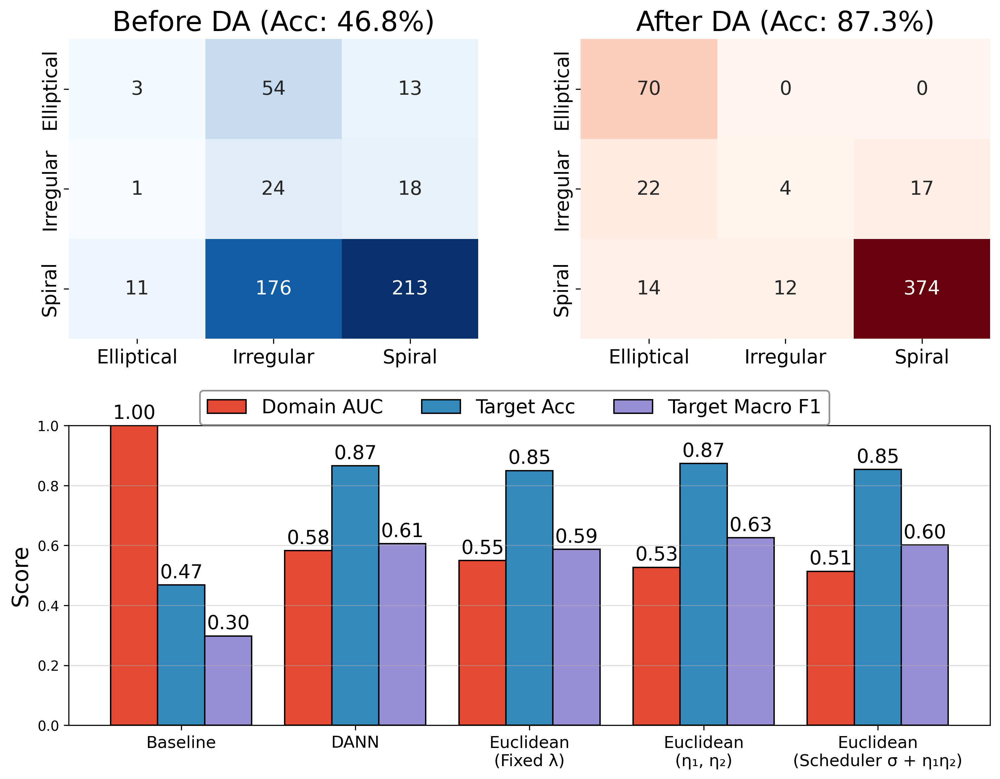
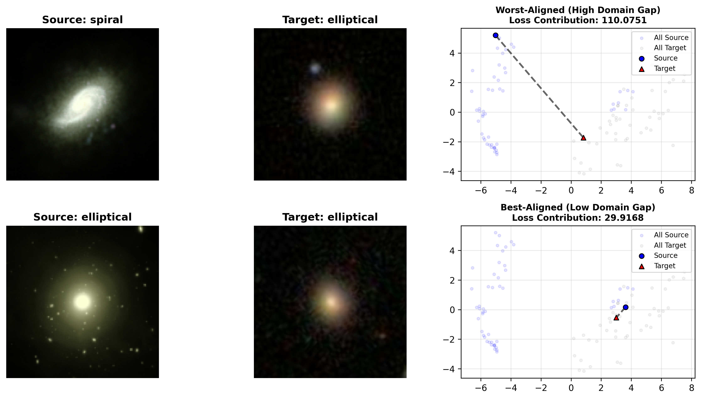

Covariate shift happens when data distribution changes between the dataset used during training, and those outside of it, often not just image properties but class distribution as well. For example, different sensors and different sampling bias, but the conditional distribution of labels given the data remains the same. We study whether domain adaptation techniques can help us narrow this gap in a realistic setting. We train on simulated galaxies and adapt to real surveys using OT-based domain alignment with top-k matching. Our approach boosts target accuracy from 46.8% → 87.3% and achieves a domain AUC ≈ 0.5, indicating strong latent-space mixing between simulated and real galaxies.
Large photometric surveys will image billions of galaxies, but we currently lack quick, reliable automated ways to infer their physical properties like morphology, stellar mass, and star formation rates. Simulations provide galaxy images with ground-truth physical labels, but domain shifts in PSF, noise, backgrounds, selection, and label priors degrade transfer to real surveys. We present a preliminary domain adaptation pipeline that trains on simulated TNG50 galaxies and evaluates on real SDSS galaxies with morphology labels (elliptical/spiral/irregular). We train three backbones (CNN, $E(2)$-steerable CNN, ResNet-18) with focal loss and effective-number class weighting, and a feature-level domain loss $\mathcal{L}_D$ built from GeomLoss (entropic Sinkhorn OT, energy distance, Gaussian MMD, and related metrics). We show that a combination of these losses with an OT-based "top-$k$ soft matching" loss that focuses $\mathcal{L}_D$ on the worst-matched source–target pairs can further enhance domain alignment. With Euclidean distance, scheduled alignment weights, and top-$k$ matching, target accuracy rises from ~61% (no adaptation) to ~86–89%, with a ~17-point gain in macro–F1 and a domain AUC near 0.5, indicating strong latent-space mixing.
We demonstrate how OT-based domain adaptation aligns TNG50 simulations to SDSS survey images in latent space:

Figure 1.Latent Space Alignment: Baseline (left, AUC=1.00) shows distinct domain separation, while Euclidean variants (center/right, AUC≈0.51) achieve effective domain alignment where source and target distributions are indistinguishable.
Our pipeline combines supervised galaxy classification with feature-level domain alignment. We use OT-based matching to minimize the geometric gap between simulated and real latent spaces, while preserving class structure.
The full objective is $\mathcal{L} = \lambda_{\text{sup}}\mathcal{L}_{\text{sup}} + \lambda_D\mathcal{L}_D + \lambda_{\text{OT}}\mathcal{L}_{\text{OT}}$, where weights ($\lambda$) can be fixed, trainable, or scheduled during training.

Figure 2. Training dynamics of OT loss components. Left: Supervised ($\mathcal{L}_{\mathrm{sup}}$), domain alignment ($\mathcal{L}_{D}$), and OT ($\mathcal{L}_{\mathrm{OT}}$) losses over epochs. Right: Breakdown of $\mathcal{L}_{\mathrm{OT}}$ into global OT, soft matching ($\mathcal{L}_{\mathrm{match}}$), and top-$k$ ($\mathcal{L}_{\mathrm{top}\text{-}k}$) which averages the $k$ worst-aligned source–target distances.
Our best-performing model (ResNet-18 with trainable weights and top-$k$ matching) achieves 87.3% accuracy and 0.626 macro-F1 on the target domain, a dramatic improvement over the baseline (46.8% accuracy, 0.298 macro-F1). The domain AUC of 0.514 indicates near-perfect latent-space alignment where source and target distributions are nearly indistinguishable, while preserving morphological class structure.
All domain adaptation methods show significant improvements over the baseline, with DANN achieving 86.5% accuracy and fixed-$\lambda$ Euclidean reaching 85.0%. The trainable weighting scheme consistently provides the most stable and accurate alignment across all architectures. For complete results including per-class metrics, domain alignment scores, and training dynamics, see the experiments results page.

Figure 3. Training dynamics for baseline, adversarial, and Euclidean variants: target accuracy (solid) and macro–F1 (dashed) over 200 epochs (left) show the baseline’s instability and the sharp post-warmup gains of DA methods, while the total loss curves (right) highlight how trainable Euclidean variants settle into a distinct, lower-loss regime.

Figure 4.Target Classification Performance: Confusion matrices and metrics showing the improvement in class separation and overall target accuracy from 46.8% to 87.3%.
We visualize source–target pairs ranked by pairwise alignment difficulty to understand how our top-$k$ OT loss reshapes the latent space. For each source embedding, we compute its minimum distance to all target embeddings and identify the best- and worst-aligned samples. The visualization shows source images, their closest target matches, and 2D latent-space projections with connecting segments whose length reflects alignment difficulty. The top-$k$ OT regularizer explicitly targets and corrects the misaligned tail that dominates domain discrepancy.

Figure 5. Top-$k$ OT-based alignment diagnostic. Hardest (largest-distance) and easiest (smallest-distance) source→target matches reveal how the alignment loss contracts the worst geometric discrepancies between domains.
@misc{brauer2025simulationssurveysdomainadaptation,
title={From Simulations to Surveys: Domain Adaptation for Galaxy Observations},
author={Kaley Brauer and Aditya Prasad Dash and Meet J. Vyas and Ahmed Salim and Stiven Briand Massala},
year={2025},
eprint={2511.18590},
archivePrefix={arXiv},
primaryClass={astro-ph.GA},
url={https://arxiv.org/abs/2511.18590},
}